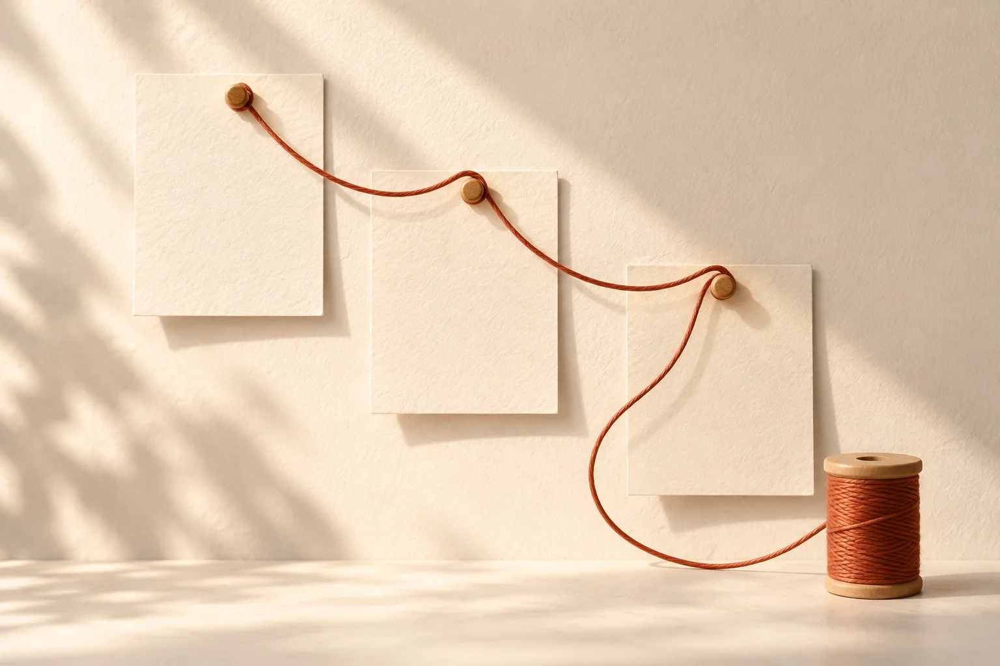

Building
Threadline
Pick up where
you left off.
Pick up interrupted development work with its context intact.A task, its code, and the context that belongs to it.Something else needs your attention.Pick up the related work inside your editor.
Internal prototype

01Work
02Switch
03Return
thesuperhuman.us/building/threadline
Illustration of the intended experience.